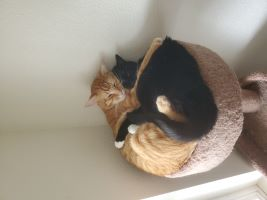
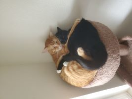

Hello everyone! I'm Katie. I live in Washington with my roommate and two cats, Tybalt and Oreo. It rains a lot here, but I love the rain so it works for me! I lived here as a kid, and moved back when I turned 18 because I loved it here so much. I have lived in a lot of different places, and Washington is easily my favorite. I love playing outside and catching critters, which is another reason Washington is ideal!
I grew up homeschooled, so when I graduated highschool, it wasn't in the typical sense. I didn't have a single credit to my name, even though I did have an education. Because of that, I never thought college was in my future, until I heard about BYU-Pathways. I have been a member of the church of Jesus Christ of Latter-day Saints my entire life, but only just recently heard of Pathways. I was so excited. Suddenly, tons of channels opened for me, and school was an option!
I wasn't sure which avenue to pursue, it was quite a sudden change for me. In Pathway I tried out different things, and found out I really enjoyed computer programming. I haven't decided which path to take with it, but that's something cool about computer science; there's so many options! And it never hurts to learn a little of each.
I work at a dental lab, and it's a bit complicated to explain. Basically, I re-work and adjust crowns and abutments(Metal "prep-teeth" that insert into an implant in a patient's jaw), and fit them together. I work under a microscope with high-speed drills to fit them together, and make sure there are no imperfections or openings between the crown and the abutment. It's really fun for me; like doing a 3D puzzle! And I get to be artistic in the process, which is a bonus. There's plenty more that I do in the lab, but it's quite a handful to take in, so I'll spare you!
I'm excited to work with all of you this semester!
Have a good one :)